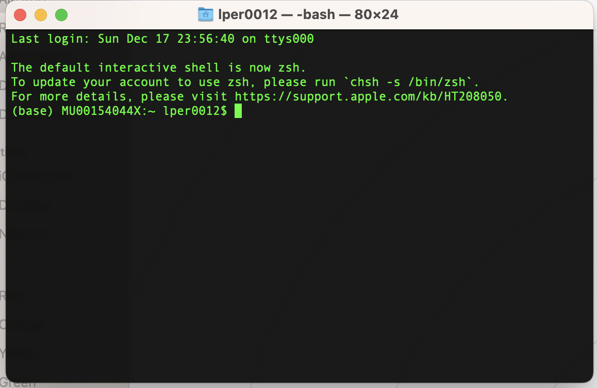
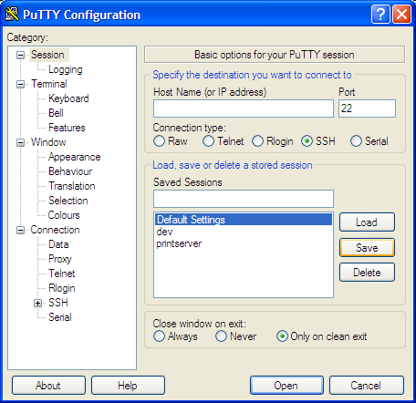

1 START HERE
2 Introduction
This nextflow pipeline allows you to run several programs using a one-line command. It wraps programs to assemble, annotate, taxonomically identify, genotypic characterize and perform simple comparative genomics on prokaryotic sequencing data. This pipeline is self-contained and is NOT meant to be run in modules (not independent parts of it). This with the intention of simplifying the user interaction and the user knowledge about the bioinformatics behind this processes. However, making yourself familiar with the programs behind the scenes helps you to make informed decisions. Please go to resources to read more about what each program is doing.
2.1 Overview of the pipeline
- Quality control of reads (short, long, or both)
- Cleaning reads
- De-novo Assembly (short, long or hybrid)
- Quality Control of the assembly and detection of contamination
- Identification of the species in the sample
- Identification of plasmids, phages and prophages
- Genes Annotation
- Comparative genomics (when reference provided)
- Coverage of reference genome
- Identification of core genome
- Identification of Single Nucleotide Variants (SNV)
- Identification of rearrangements and larger deletions
- Characterization of genes of interest (when genes sequences provided)
3 Getting Started
3.1 Make sure you have Nextflow running
Before you get started with the pipeline, make sure you have installed nextflow.
If you are using a cluster there are high chances that nextflow is a module already installed. Please call the module. Type the following command and use tab after the word nextflow to see if you have different versions available. Ideally use the most recent version.
module add nextflowIf you can have conda installed in your system (either in your computer or your server), you could create a conda environment and install nextflow following the next commands
conda create -n nextflow
conda activate nextflow
conda install -c bioconda nextflow
Use conda activate nextflow every time you want to use nextflow
Alternatively, you could install nextflow using the nextflow installation instructions
3.2 Download the nextflow pipeline
Run the following command
git clone git@github.com:Grinter-Lab/ProkGenomics.git
If you have issues consulte the troubleshoot section for help
A successful download of the repository should look like this:
Cloning into 'ProkGenomics'...
remote: Enumerating objects: 3, done.
remote: Counting objects: 100% (3/3), done.
remote: Compressing objects: 100% (2/2), done.
remote: Total 3 (delta 0), reused 0 (delta 0), pack-reused 0
Receiving objects: 100% (3/3), done.To be able to run the program from any location without using the complete path, run the following commands
# move to the program folder
cd ProkGenomics/
pwd
# This will print your location
/path/to/dir/program/
export PATH="$PATH:/path/to/dir/program/"3.3 Set up your working directory
Create a working directory for your project
mkdir Project1
cd Project1
Create a folder for your raw data
mkdir rawdata
cd rawdata3.4 How to transfer raw data to cluster/server
Open a tab in your terminal from your local computer
# from tab in your local computer
# scp <location in the server, notice structue as serve:path> <location in your computer where you want the file to go>
# notice that the wild card allows you to move all files ending in fq.gz. if your files have a different extention please modify accordently (ex. fastq.gz)
scp *fq.gz <username>@<cluster_name>:/srv/home/username/folder/
4 Run Pipeline
Remember to put the program in your $PATH if you haven’t done it. This step has to be done every time you start a new terminal session. If you want to make this change permanent you could modify your bash profile (don’t play around with it if you don’t feel confident about it)
If you added the program to your $PATH successfully you should be able to run
nextflow run ProkGenomics
If it starts correctly, you will see something like
N E X T F L O W ~ version 21.10.6
Launching `main.nf` [focused_noether] - revision: eb930f0e69
If you don’t see a version of that go to troubleshoot to look for possible solutions
4.1 Simple run
nextflow run ProkGenomics --sample_name '1-77321' -profile condaParameters you can use:
--sample_path ./rawdata/
The default path for the reads is the folder rawdata in the working directory. If you followed the instructions for setting up the working folder. if you have your reads somewhere else you should change this parameter to that path.
--sample_name 1-77321
The sample name is the prefix of your samples files. it doesn’t have a default because I don’t know your sample names.
--assembly_type short
This parameter can be short long or hybrid. The default is ‘short’. if you have short reads you don’t have to specify this parameter. If you pick the argument long or hybrid the longreads parameter should be specify. For hybrid make sure to give a path for short and long reads.
--longreads ./rawdata/longreads/
Path to the long reads.
--threads 16
Number of threats to use. More threats faster your processing. Make sure you know what is available for you.
--outdir 1-77321
The results will be in a folder in the working directory with the same sample name and _results ex. 1-77321_results.
--assembly
if you provide a path to an assembly from the reads, the assembly steps will be skipped.
--reference reference/ReferenceGenome.fasta
If you have a reference genome put the path here. This will activate all the comparative genomics steps.
--adapter_file TruSeq3-PE.fa
To trim your short reads you need to specify what adaptors where used when sequencing. Arguments are “TruSeq2-SE.fa”, “TruSeq2-PE.fa”, “TruSeq3-PE.fa”. The default is “TruSeq3-PE.fa”.
--genes_interest GenesBD/*fasta
Path to a folder that contains all genes of interest. The correct formating is a genes per file in fasta format.
5 Understand Outputs
(still in development) ## OUTPUTS
Folder with each analysis will be generated.
folder test_output: This folder contains all the intermedia files used for the program. These files will help you to check in detail where your alignment come from. In case you are puzzle by your final table. Each folder contains:
GenomeName.chr.genes.faa: all predicted genes in AA
GenomeName.chr.genes.fasta: all predicted genes in nt
GenomeName.chr.genes.gff: all predicted genes in gff format with the fasta file at the end
GenomeName.chromosome.GeneName.Blast.txt: blast results of the gene against the genome
GenomeName.chromosome.GeneName.fasta.plusRef.fasta: fasta of gene reference and gene in the genome
folder test_results
This folder contains all final results files and a folder with the predicted peptides that match with the genes of interest
GeneName.fasta.nt_alignment.fasta: The alignment of each gene of interest for all the genomes analysed
test.alignments.description.txt: table with the descriptive information of the alignments, stop codons, gaps, insertions, SNPs, N.copies (numbers of copies)
Peptides (folder): predicted peptides that match with the genes of interest
Additional files when running any of the –Kleb, –Esch or –Ent options
folder test_output:
Each assembly has two folders one for the chromosome and one for the plasmid. Examples here are about the chromosome, .plasmid_ are for plasmids
GenomeName.chromosome_contigslist.txt:list of contigs in the assembly that are chromosomal
GenomeName.chromosome.fasta: fasta file of chromosomal contigs
GenomeName.fsa_nt.chromosomesummary.txt: summary results from chromosome prediction from mlplasmid
6 Write Methods
Still in development
7 Troubleshooting
7.1 git@github.com: Permission denied
You may see this error:
Cloning into 'ProkGenomics'...
git@github.com: Permission denied (publickey).
fatal: Could not read from remote repository.
Please make sure you have the correct access rights
and the repository exists.Note that this is a private repository, you may required to log in using your github details. Github now requires for you to setup a token key to access private repositories, please follow the github instructions to set up one
8 Resources
https://www.bioinformatics.babraham.ac.uk/projects/fastqc/
http://www.usadellab.org/cms/?page=trimmomatic
https://github.com/rrwick/Unicycler
Other programs
9 Command Line Intro
If you are completely new to working with command line the following short introduction should be useful to get you started. Please read carefully this section, it will help you to understand instructions in later sections.
9.1 General syntax and conventions:
• Code or command are instructions directly given to the computer through a console or terminal window. Code or command lines in this tutorial are written with this style or
in this boxes• If a string is written between < > it means that you have to type what that means in your case. For example: Login as: <your username> this means you have to type your user name in that space without the < >
For example, the following instructions should look like:
cp <file_name> <file_destination>My file name os myfile.txt and my file destination is newfolder
cp myfile.txt newfolder
• When asterisk * is used it means all of that kind. For example: ls *.fasta will print a list of all files that have the extension .fasta
• Every line starting with # is a comment. There lines are not interpreted by your computer, there are there only to give you additional information.
9.1.1 Programs:
Command lines for executing programs usually looks like:
program --input <inputfile>where
program is the program in question
--input is the option or parameter
inputfile is the argument
• Options/parameters for a program are denotated by a dash and a letter as:-f or a double dash and a string as: --file. If an option is not required but optional is often explained using [ ], for example: [-t 8]
• Arguments are the input to the options/parameters. For example -f myfile.txt. -f is the option to input your file and myfile.txt is the argument for that option, the name of your file. The arguments are often explained using < >. When several arguments are possible for an option pipes are used to show the different possibilities, for example [-f sam|bam]. This means the option -f allows sam or bam formats
9.2 Basic commands:
When you enter your terminal your prompt consists of: HOST_NAME:MACHINE CURRENT_DIRECTORY $ everything after $ is your command line. You can use the following basic commands to access information or perform tasks in your computer.
• change directory
cd <name of directory you want to change to>cd or cd ~ move you to your home directory
• print working directory
pwd• list your files
ls• make dir*ectory
mkdir <new folder name>• copy (needs file to be copied and destination).
cp <path of file to be copy> <destination path>9.3 Files system
• Please note that directories are structured in a hierarchical system. You have to know where you are standing to ask the computer to move to the correct folder.
Example of folder structure:
| subfolder_1
|
main_folder
|
| subfolder_2
|
|subfolder_2.1 (YOU ARE HERE)
#where am I?
pwd
#shows this path: /main_folder/subfolder_2/subfolder_2.1
# I want to go to the folder conteining this folder
cd ..
# moves to /main_folder/subfolder_2/
# I want to go to the folder conteining this folder and change to a folder that is there
cd ../subfolder_1
#moves to subfolder_110 Connect to the cluster
10.0.1 Macs
If you are working on Mac you can directly open the terminal from applications or click the Launchpad icon in the Dock, type Terminal in the search field, then click Terminal. You will see a version of this:

type the following command
ssh <username>@<cluster_name>where <username> is your authcate and the <cluster_name> is the cluster you are connecting to. Click enter, you will be asked for a password. Enter your password and click enter. Note you will not see the characters as they are typed. You are now in your home directory on the cluster.
10.0.2 Windows
If you are on a windows-based PC, you will need to download PuTTY.

In the hostname (or IP address) box, enter the hostname that you were provided, ie. <username>@<cluster_name>, where <username> where <username> is your authcate and the <cluster_name> is the cluster you are connecting to. Ensure the connection type is SSH. Click open. You will be prompted to enter your username (authcate) and password in the terminal window. Enter your credentials and click enter. Note you will not see the characters as they are typed. You are now in your home directory on the cluster.
Now you are ready to go